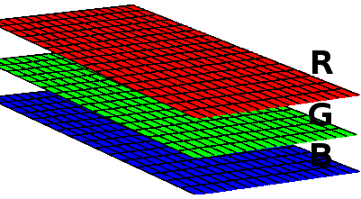

Neste artigo eu explico como ler e criar / escrever imagens de satélite e de informações geográficas no formato .TIF com a biblioteca Gdal em C#.
Primeiramente, importamos o Gdal para o projeto: no Visual Studio, clique com o botão direito no projeto, vá em "Manage NuGet packages", digite "Gdal" no campo de busca, selecione o Gdal (1.11.1 é a última versão disponível até o momento em que este artigo foi escrito) e instale. Selecione e instale também o Gdal.Native (sem ele o projeto compila mas não executa corretamente). A classe "GdalConfiguration.cs" será criada automaticamente. Ela será usada antes de iniciar o método para conversão.
Para importá-lo em sua classe use:
using OSGeo.GDAL;
Antes de usar as classes do Gdal, precisamos configurá-lo. Para isso, basta chamar o método ConfigureGdal da classe GdalConfiguration.cs. Você pode chamá-lo, por exemplo, no construtor de sua classe.
public WhiteBalance() {
GdalConfiguration.ConfigureGdal();
}
Para abrir uma imagem que já existe use o seguinte comando:
Dataset image = Gdal.Open(imagePath, Access.GA_ReadOnly);
O ideal é usar um bloco de instrução using, para fechar o objeto adequadamente. Para criar uma nova imagem, você deve fornecer seu tamanho, o número de bandas (para RGB são 3) e o tipo de dado de cada pixel (byte, int16, int32, etc).
Dataset outImage = Gdal.GetDriverByName("GTiff").Create(outImagePath, width, height, 3, DataType.GDT_Byte, null)
Uma imagem pode ser vista como uma matriz tridimensional. Cada banda é uma matriz e representa uma cor. Numa imagem RGB existem 3 bandas. Se existir uma camada alfa, por exemplo, ela terá 4 bandas.
Cada banda é acessada com o seguinte código:
Band outRedBand = outImage.GetRasterBand(1);
Para cada banda podemos acessar sua matriz. Neste exemplo, acessamos cada linha da matriz, copiando os dados para um vetor previamente declarado (int[] red) e depois acessamos cada elemento:
for(int h = 0; h < height; h++) { int[] red = new int[width]; redBand.ReadRaster(0, h, width, 1, red, width, 1, 0, 0); for(int w = 0; w < width; w++) { red[w] = red[w] + 1; // algum processo com cada pixel } }
Para escrever os dados na imagem, passamos o vetor de pixels para o método:
outRedBand.WriteRaster(0, h, width, 1, red, width, 1, 0, 0);
Se você quiser ler ou escrever mais dados de uma vez, e não linha a linha, altere os tamanhos e posições nas funções. Por exemplo, para ler e escrever todos os dados da matriz de uma só vez:
int[] red = new int[width * height]; redBand.ReadRaster(0, 0, width, height, red, width, height, 0, 0); outRedBand.WriteRaster(0, 0, width, height, outRed, width, height, 0, 0);
Ao final, salve os dados de escrita:
outImage.FlushCache();
O código completo para ler, modificar e escrever imagens .TIF com o Gdal:
new ReadWrite().ReadAndWriteImage(@"C:\development\input-image.tif", @"C:\development\output-image.tif");
using OSGeo.GDAL; using System; namespace Adadev.GdalModule { public class ReadWrite { public ReadWrite() { GdalConfiguration.ConfigureGdal(); } public void ReadAndWriteImage(string imagePath, string outImagePath) { using(Dataset image = Gdal.Open(imagePath, Access.GA_ReadOnly)) { Band redBand = GetBand(image, ColorInterp.GCI_RedBand); Band greenBand = GetBand(image, ColorInterp.GCI_GreenBand); Band blueBand = GetBand(image, ColorInterp.GCI_BlueBand); Band alphaBand = GetBand(image, ColorInterp.GCI_AlphaBand); if(redBand == null || greenBand == null || blueBand == null || alphaBand == null) { throw new NullReferenceException("One or more bands are not available."); } int width = redBand.XSize; int height = redBand.YSize; using(Dataset outImage = Gdal.GetDriverByName("GTiff").Create(outImagePath, width, height, 4, redBand.DataType, null)) { // copia a projeção e informações geográficas da imagem double[] geoTransformerData = new double[6]; image.GetGeoTransform(geoTransformerData); outImage.SetGeoTransform(geoTransformerData); outImage.SetProjection(image.GetProjection()); Band outRedBand = outImage.GetRasterBand(1); Band outGreenBand = outImage.GetRasterBand(2); Band outBlueBand = outImage.GetRasterBand(3); Band outAlphaBand = outImage.GetRasterBand(4); for(int h = 0; h < height; h++) { int[] red = new int[width]; int[] green = new int[width]; int[] blue = new int[width]; int[] alpha = new int[width]; // copia cada linha da matriz da imagem para os vetores definidos acima redBand.ReadRaster(0, h, width, 1, red, width, 1, 0, 0); greenBand.ReadRaster(0, h, width, 1, green, width, 1, 0, 0); blueBand.ReadRaster(0, h, width, 1, blue, width, 1, 0, 0); alphaBand.ReadRaster(0, h, width, 1, alpha, width, 1, 0, 0); for(int w = 0; w < width; w++) { red[w] = red[w] + 1; // algum processo com cada pixel green[w] = green[w] + 1; blue[w] = blue[w] + 1; alpha[w] = alpha[w] + 1; } // escrever imagem outRedBand.WriteRaster(0, h, width, 1, red, width, 1, 0, 0); outGreenBand.WriteRaster(0, h, width, 1, green, width, 1, 0, 0); outBlueBand.WriteRaster(0, h, width, 1, blue, width, 1, 0, 0); outAlphaBand.WriteRaster(0, h, width, 1, alpha, width, 1, 0, 0); } outImage.FlushCache(); } } } /** * Retorna a banda para determinada cor (red, green, blue ou alfa) * O dataset deve ter 4 bandas * */ public static Band GetBand(Dataset ImageDataSet, ColorInterp colorInterp) { if(colorInterp.Equals(ImageDataSet.GetRasterBand(1).GetRasterColorInterpretation())) { return ImageDataSet.GetRasterBand(1); } else if(colorInterp.Equals(ImageDataSet.GetRasterBand(2).GetRasterColorInterpretation())) { return ImageDataSet.GetRasterBand(2); } else if(colorInterp.Equals(ImageDataSet.GetRasterBand(3).GetRasterColorInterpretation())) { return ImageDataSet.GetRasterBand(3); } else { return ImageDataSet.GetRasterBand(4); } } } }
Você pode baixar o código completo no nosso repositório no Github.